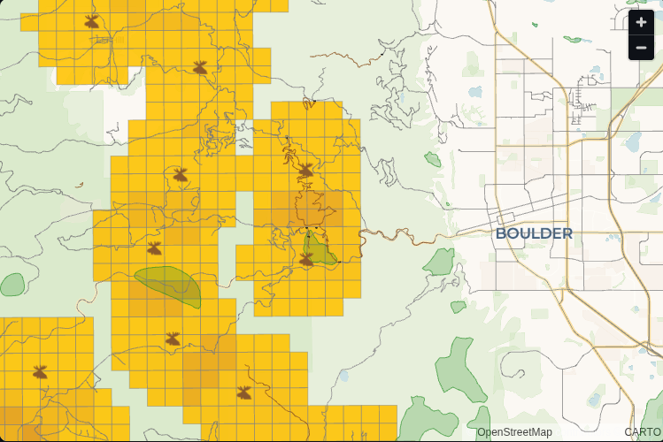
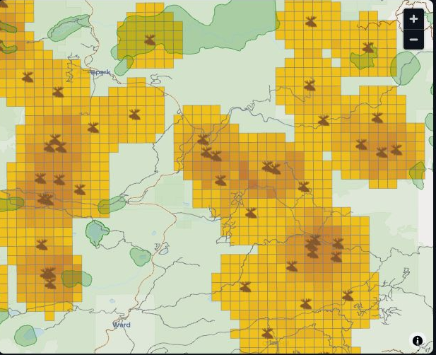

conservation-dashboard
Web map showing weekly moose sightings in Boulder County using Google Cloud Run/Service, Duckdb, and Streamlit.
github.com/austinbreunig/conservation-dashboardI don't build too many web maps in my day-to-day work, so I wanted to explore using GCP to deploy a simple dashboard. This project is a good example of framing a web map, building a pipeline to process and expose the data, and wiring up the infrastructure to host the dashboard.
Moose are a common and beloved wild animal in Boulder County, Colorado. I thought it would be fun to synthetically populate random moose sighting across the county and visualize potential conservation areas for maintaining and restoring critical moose habitats.
I applied a grid overlay which introduces a scoring system to identify areas of high conservation value. The scoring system is based on the presence of wildlife corridors, critical wildlife habitats, and trailheads. The dashboard is designed to be refreshed monthly with new moose sightings and updated scoring.
The Dashboard
It scales to zero, so it may take a few seconds to wake up.


Every 500 m square on the map gets a score from 1 to 10. A higher score means a better place to protect moose habitat.
A square needs at least one moose sighting to be scored. Without one, it is left blank, because nothing is known about it.
The number of sightings sets the size of the score. Five or more sightings counts as the most; extra sightings add nothing. Then the score rises when the square is close to four things: critical habitat, a wildlife corridor, a trail, and a road. Every square with sightings starts with a 40% base. Habitat and corridors add up to 20% each, trails up to 15%, and roads up to 5%. The closer the square is, the more it adds. Past 1,500 m for habitat and corridors, or 800 m for trails and roads, it adds nothing.
Try it below. Move the sliders and watch the score and the color change.
This visual did not load. Open it on its own page.
The moose sightings are synthetic. The other six layers (trailheads, trail segments, critical wildlife habitats, wildlife corridors, county roads, county boundary) are real Boulder County data.
The Pipeline
Pipeline text goes here. Not written yet.
Tools to name go here. Not written yet.
This visual did not load. Open it on its own page.
Monthly Refresh
Monthly refresh text goes here. Not written yet.
Architectural Decisions
A few basic decisions that were made up front were based on a few preferences. The first preference was that I didn't want to manage a server. The second was that I wanted to use Cloud Run and Scheduler to refresh and host the dashbaord. And
Status
Status goes here. Not written yet.